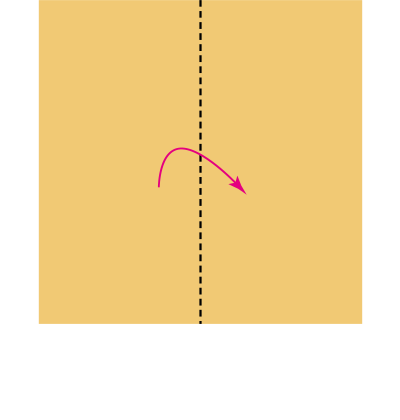
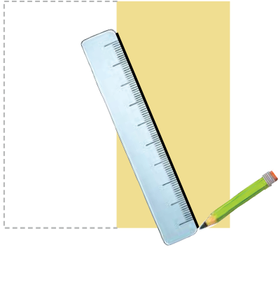
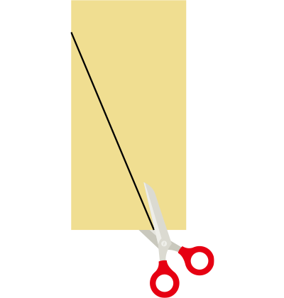
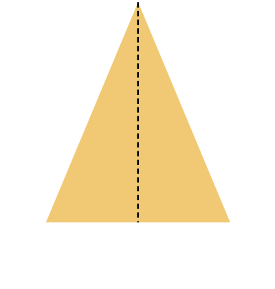
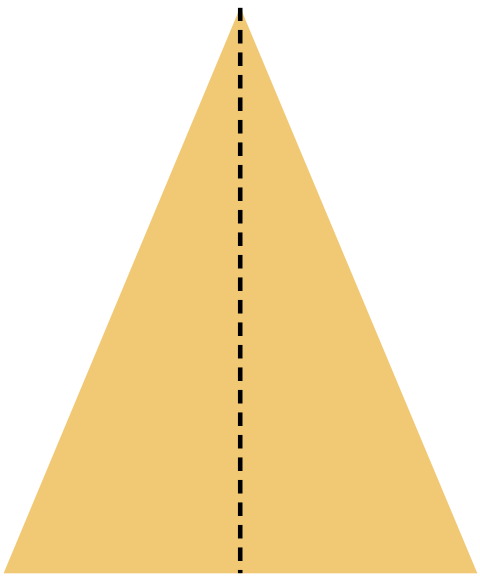
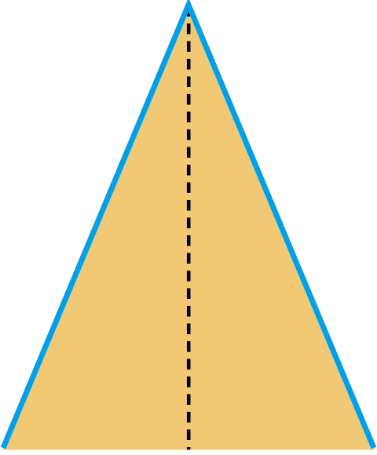

- 물음 1
- 물음 2
- 물음 3
- 물음 4
-
색종이로 이등변삼각형을 만들어 보세요.
활동 영상 보기    -
변의 길이가 같은 곳을 찾아보세요.
  -
각의 크기가 같은 곳을 찾아보세요.
나는 접어서
찾아볼 거야.활동 영상 보기나는 각의 크기를
재어 찾아볼 거야.활동 영상 보기 -
이등변삼각형에 대해 알게 된 점을 말해 보세요.
이등변삼각형의 길이가 같은 두 변에 있는 두 각의 크기가 같다는 것을 알 수 있습니다.